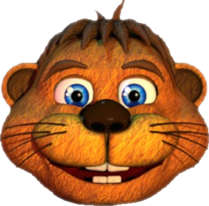
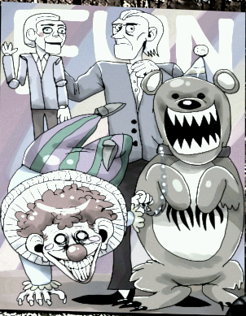
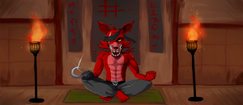

If you see any issues, please do make us aware via our Contact Form.
Thank you for browsing FNaFLore.com, we hope you enjoy the improvements that are coming to the site!


The lore of UCN
There’s a rift between the theorisers now that UCN has dropped. It has devolved into two main theories: UCN is either Michael or William’s hell. No matter which one you choose, there are always contradictions. And I have chosen a third option.
I need you to please be open minded about the point of view that is going to be used to explain the UCN. The base for this explanation is assuming that the Foxy brother is his own person and that Mike is the Bite Victim. The points for that theory has been explained somewhere else and I ask you to only comment about the UCN, this isn’t a Mike Victim debate but an X’s Purgatory debate.
Lastly, before starting the theory itself, I have to remark that there are points that will be predictions. Don’t forget, we getting more books that include some stories connected to the games and there will be other FNAF games (even if they won’t be done only by Scott), which means more lore. So this isn’t the end just yet and there’s room for predictions.
There’s a TL;DR at the end.
The antagonist(s):
Before getting into who we are playing as, I’ll explain the two candidates for who we are pitched against, “Vengeful Spirit” and Baby. Let’s start with the “Vengeful Spirit” being the antagonist.
They seem to be the kid that sometime shows up in the vents, they are apparently blonde with blue eyes, and that description doesn’t fit anyone we know as of now. Could this character be the “vengeful spirit”?
The audition for this character didn’t specify whether it would be male or female, just a child and more importantly, the one in control. This audition was seemingly discarded, as we never get to hear the VA; and this is not the first time an audition got through and then it got discarded, in Sister Location there was going to have a cooking show featuring a mature woman and the actress was contacted and paid for the job, yet the lines for said work were never used nor included in the final version of the game. Unless this is the voice underneath the Mediocre melodies. Some people claim that this voice could be Heather Masters’ instead of the new VA and honestly, I think it may be very possible as well. I wouldn’t be surprised in either case. One thing for sure is that we don’t have all the lines of Vengeful spirit if they are the one behind Mediocre Melodies, they would be bound to speak some more in this was the case. If this voice which is clearly female is meant to be the Vengeful, that thing alone discards BV as the one behind this “hell”.
We have a possible explanation for who this spirit could be. In the Toy Chica anime, she kills a total of seven boyfriends, and that is meant to represent William killing kids, so William killed seven important kids. This spirit would be the seventh victim. Someone new that we haven’t heard about.
If this is someone new meant to introduce a new arc, there’s a series of questions regarding them.
Why weren’t they mentioned before? What role do they have in this new arc? What did the player do to them to earn so much hate from them? Are they really the antagonist of UCN, or just some “bystander”?
Now I’ll discuss the second option, Baby. We know her character rather well thanks to both the games and the books, and this extreme hate, to the point of being incredibly childish fits her character; she was introduced in Sister Location with the phrase “Anger is restless”, besides we’ve been told of her ability to pretend. This last point is going to be very important for how we should be looking at UCN.
There’s something important to notice about the different character lines said in UCN; something that becomes apparent when hearing the Mediocre Melodies. Through the lines of Orville, Neddbear and Happy Frog there’s three lines where there’s an underneath voice that says this:
“We’ve only just begun. I’ll never let you leave, I’ll never let you rest.”- Happy frog
“This is how it feels, and you get to experience it over, and over, and over again, forever. I will never let you leave.” -Neddbear.
These lines have nothing to do with what the same characters are saying in their other lines. They look as if an actor was breaking character. In these lines we are seeing Baby’s true colours; she let’s go so much, that the player can actually hear her among the voice of the animatronics of UCN, which are her “puppets”. Unfortunately, the situation is even more complex, not only she is hiding behind the likeness of the animatronics, she is letting know that there is someone controlling the UCN as well; but of course she isn’t incriminating herself, she is framing “The One You Shouldn’t Have Killed” aka Bite Victim aka Michael. I’ll tell what her motive for this is, later on.
Now let’s analyse Baby’s voice lines.
I guess you forgot about me…
Want to see the scooping room?
I guess you forgot about me…
It’s not a mistake, she repeats twice about being forgotten. Let’s move on to Scrap Baby:
Time for your controlled shock.
Time for your controlled shock.
Let’s see how many pieces I can cut you into.
You won’t die, but you’ll wish you could.
And the thing she repeats is the controlled shocks. So those two points are important to her. And we can see that doesn’t fit for Mike being the player. Mike didn’t forget about Baby. So what Baby is reprimanding the player for is that he forgot about her and being tortured by him. Here I’ll advance something about the player, he most likely is the Foxy brother. The brother had somehow mistreated her, and he could have done so as a teen like he did to Mike or even as an adult in the sister location. After all, someone before Mike made the hiding place under the desk, and it could have been done by the brother. Perhaps he even “forgot” about her purposely, not wanting to save her, so his failure could have been intentional, but it’s difficult to say, since we only have some kind of insinuation and a biased view from Baby.
She hates the player so much that she doesn’t want to release him or anyone. Because she is keeping more souls trapped, Withered Bonnie comments on this:
In the end of FFPS we are told: “And to you monsters trapped in the corridors, be still, and give up your spirits. They don’t belong to you.”. She could be keeping those spirits still. We don’t know of any children keeping souls trapped, but we do know of Baby implied to be able to keep souls in the ending of Pizzeria Simulator. So this tips the scales so slightly in her favour.
Another reason for why Baby could be the one trapping the player and other souls is found in FFPS. Let’s look at Lady Fiszi’s art, her drawing of “the Afton Family”.

In there a clown is holding the yellow bear by a chain. This could be read as a representation of Baby and Molten Freddy, how she was bossing him around as seen in the webpages dialogue. And yet, isn’t it odd that this bear is Yellow? It seems to look more like Fredbear. Could that Yellow bear mean to represent both Molten Freddy and Fredbear as being one entity? And since we have Mike as the ventriloquist’s doll, William as the ventriloquist himself and Baby as the clown, by default the other person of the poster has to be the Foxy brother. How did he end in Molten Freddy? Why is Molten Freddy meant to be “Fredbear”? This will be deliberated during “the player” section.
There’s more implying that Baby is the one behind UCN. After all this time (as of April 2019) she is still in FNAFWorld.com; and at the end of the update 2 in FNAF World she took over that realm by killing Sad Desk Man. The connection between FNAF World and UCN is pretty tight, from animatronics coming exclusively from that game, to the OMC minigame, it even has the opening menus almost identical with the boxes and the characters faces you can select from. If they are nearly the same thing, this means that she could be interfering with the spiritual world, and that ranges from keeping the player trapped, to perhaps even interfering with Happiest Day, making it impossible to take place until she gets defeated. This makes some aspects of FNAF World even more canon. It’s not just the clock ending, that’s canon; the end of Update 2 is now canon as well, and it doesn’t just present Baby for Sister Location, it also tell us that she is now in control of that place. With this, UCN would be the continuation of FNAF World.
Another point towards her being the one in charge of the place is in the name of the main theme heard in UCN, eisoptrophobia. This word means “fear of mirrors”, but a dislike of mirrors can fit in its meaning. The easiest way (and yet most likely the wrong one) to fit the meaning of the title of this song would be if the protagonist was Mike because of his scene at the end of SL in which he sees himself after being scooped by Ennard, or maybe given his allegedly resemblance to William he sees him when he sees his reflection. But in truth there’s another candidate for having eisoptrophobia; in the novels Baby mentions in an offhand line that she hates mirrors. So the title isn’t talking about the player, it is about the antagonist; and she hates mirrors. The song’s title is used in a way so that we have both the proper answer and a misdirection at the same time. Just as the lore is getting presented lately.
One point I’d like to talk about are her motivations. I mentioned that she could be feeling that she was forgotten by her brother and perhaps even electrocuted by him in the SL. But her motivations as of UCN could be fairly simple as well. With her link to the physical world destroyed (The burning she mentions), she can’t acquire any new souls. With nothing else left, she punishes him as a drawn-out act of cruelty, because it’s all she can do at this point.
Before moving on to the next part of the theory here’s a table for the points of the two possible antagonists of UCN.
|
Seventh victim |
Elizabeth |
| Pros:
The demon kid shown. Toy Chica anime may hint at a seventh victim. Vengeful spirit lines were most likely planned for this character, yet they seem to have been discarded. |
Pros:
She is most likely the voice heard undercover of the Mediocre Melodies. In FNAF World she takes over after killing Sad Desk Man, meaning that if UCN is the same place as FNAF World and its continuation, that dimension is under her control. She is implied to be able to trap souls in the ending of FFPS, so she could be the one keeping her brother trap. Foxy brother bullied Mike as a kid, so he could have done the same to her, even in the sister location. He could have even “forgotten” about her by deciding not to save her. Eisoptrophobia is telling us that the antagonist is Baby because she hates mirrors. In the “Afton family” poster from FFPS she is represented as a clown holding a golden bear by a leash. If the Foxy brother ends in Fredbear then this is foreshadowing of her keeping him under her control. |
| Cons:
What did the player do to them to deserve so much hate? Why introducing this child now? Why wasn’t they included before and what makes them so special now? |
Cons:
Why introducing a seventh victim of Afton if they aren’t going to be used? Similar to the seventh victim, what did the brother do to her to deserve so much hate from her? Although from the books she seems capable of holding really childish grudges and dealing a disproportionate punishment for them. |
Personally I lean towards Baby being the real antagonist and the “demon kid” being a bystander, unrelated to the whole ordeal and unrelated as well to The One You Shouldn’t Have Killed.
The UCN player:
Now that we have talked about the antagonist of UCN let’s continue with explaining the player. The Foxy brother.
Let’s start with the least likely evidence. This could be a case of just reused audio instead of a proper clue, but I’ll mention it nonetheless. The FNAF 3 breathing sound is reused in UCN. In the logbook Foxy is drawn as being the night guard of the Fazbear’s Fright, which is in line with the brother being represented by this character, so the breathing could be his.
To follow up on the Foxy imagery representing the brother, we have the anime of Freddy and Foxy which represent the two Afton brothers, Mike and the Foxy brother. Mike is Freddy because he is the one with an important birthday (as the BV), he also owns a flute and in the logbook in the page where Springtrap asks him “Did one of these belong to you?” there’s the silhouette of a flute. Mike as a child owned the purple phone and a flute. Foxy represents the Foxy brother because they both share physical traits, like wearing grey and having a well-built constitution, and of course the Foxy imagery.


In the real translation of the anime Freddy is also bullied by kids just like how BV was bullied and teased, “Foxy” says that he loves to troll “Freddy” and he wants to show his friends embarrassing pictures of “Freddy”.
Another thing that tells us about the player is hidden in Mr. Hippo lengthy monologues. Mr. Hippo said that the player is someone young, so that discards William as the player.
Remember back then when I said that the Foxy brother would end up in Molten Freddy? He took a previous route dying in Fredbear first.
In the final scene of UCN we see Fredbear and he is twitching violently. We have seen before this animation, it’s the same as Springtrap’s, as shown in the FNAF 3 trailer. The brother died inside Fredbear, however this scene is “missing” something, and it is found in the OMC scene.
In the OMC scene, he is calling out for help, for Mike’s help. This is what I think he says:
Putting the OCM screams with the last scene of UCN give us the real scene, the Foxy brother dying from a springlock failure and calling out for Mike.
Back to the last scene of UCN I have seen some people “complaining” that it has used Golden Freddy (the ghost), I think that there’s a small inconsistency between what is shown and what is told. Yes, the model is the Golden Freddy one, but that is because most likely the Fredbear model we see ingame, was made in the last minute when the “Golden Freddy” animation was already made. So Scott didn’t bother to rig and make again the animation with the new model. It suffers from the same problem the FNAF 3 trailer had; the trailer shows an already rotten Springtrap while in the minigame the Spring Bonnie animatronic is in better condition; so as I said it is an inconsistency between what is shown and what is told.
This way Fredbear now is holding at least two souls, Cassidy and the Foxy brother.
One interesting thing is that killing Golden Freddy with a Death Coin gives us a game over instantly via Fredbear. Golden Freddy is Cassidy, a spirit, but it is as well a “representation” of Fredbear. Since we have said that Fredbear holds Cassidy and the Foxy brother; using a Death coin on “Fredbear” means that the player is “suiciding”. The player, the Foxy brother, is trying to kill with a Death Coin the vessel that is carrying him.
Let’s go back to the Aftons poster. The clown was holding the yellow bear, so that means that Baby was controlling the Fredbear person. We know from the dialogue on the websites that Baby was being bossy to her former companions as Ennard, so then why is Fredbear here? At what moment was Ennard able to pick up Fredbear and add him to the amalgamation of animatronics?
Truth be told, this explanation on itself would need its own theory. But here is a summary; Molten Freddy has remnant from the original five animatronics, so if there are more spirits tied to Fredbear, those would move partial or completely to Molten Freddy.
The Toy Chica anime would be a metaphor for William giving way for the creation of Molten Freddy by fusing his victims’ spirits to the Funtimes.
(Continuation of the UCN player) The old friends challenge
There’s a challenge that has a clue: the Old friends challenge. Like the saying goes, “The best place to hide a tree is in the forest”, so this one is the odd man out because the rest of them are themes (even if they include strategic animatronics for balance reasons).
These friends of the player are: Freddy, Bonnie, Chica, Foxy, Toy Freddy, Toy Chica, Toy Bonnie, Mangle, Balloon boy, puppet, Springtrap and Baby.
Baby: His sister
Puppet: Charlie, who he probably once knew.
Springtrap: His father
Originals: Mike calls them his friends. So they could be mutual friends with his brother as well.
Toys: All of the children Mike meets on the way home from the FNAF 4 location are assumed to possess the Toy animatronics. Similar to the case above, they could be mutual friends.
Phone Guy: He listened to him every night on the shift during FNAF 2.
There’s someone missing in all of this: Golden Freddy (aka Cassidy). There are many possibilities as to why is she missing. Maybe Cassidy wasn’t a friend of his, but she was the friend of the rest of the kids that ended on the original 4, and she invited them to her birthday party, but excluded the Foxy brother and/or Mike.
We can infer that the player was a night guard who lived until FNAF 3, because there’s no animatronics from after it chronologically.
Mike can’t be the player because: Golden Freddy isn’t there among the friends. We should remember the “These are my friends.” Quote. Why wouldn’t Cassidy be an old friend of the BV?
Alternatively if this is referring to the Foxy brother: The main 4 animatronics represent his friends who he killed BV with.
(Continuation of the UCN player) Protagonist of another story
The Foxy brother has gone to nearly all the locations. The logbook shows that he has been in FNAF 1 and 2 because of the writing prompts because only a night guard would know about Foxy’s behaviour and the FNAF 2 prompt is about “Jeremy” changing to the day shift; as a side note, this prompt also proves that Foxy brother isn’t Phone guy, Phone guy was his boss, and maybe his friend, since he was included in the Old Friends challenge. Foxy brother is “Jeremy”, but that’s not his real name because it’s on the MCI gravestones, like “Fritz” aka Mike. He has been as well in the FNAF 3 location because the whole logbook is about “Foxy” working at Fazbear’s Fright. In Sister Location Baby talks about someone who had made a hiding spot under the desk, so following the pattern that “Jeremy” goes to the locations before Mike does, then he is likely to be the one who made it.
Foxy brother aka “Jeremy” is a very important part of FNAF 3, UCN and FNAF World. Here’s the relation between those three games.
The clearest connection is between UCN and FNAF World first because of the OMC cutscene, and more things such as Dee Dee having part in virtually all nights (depending on luck) and enemies from FNAF World appearing as cameos for the figurines of Bonnie and Foxy, arguably even getting the drowned trophy in FNAF world from getting the OMC cutscene in UCN. Even enemies from FNAF World make their appearance in UCN, such as Tangle, Bouncepot and White Rabbit.
The connection from FNAF 3 to FNAF World comes from getting the clock ending (arguably the most canon part of FNAF World) since they represent in FNAF World the minigames to get Happiest Day from FNAF 3. After all, FNAF World is meant to have some canon relevance; Scott himself said so in the interview “I should have done something for fun and not try to tie it to a canon game”; despite disliking FNAF World he considers it important enough to be canon.
Relating FNAF 3 to UCN is a bit more difficult; the phantoms are a product from the FNAF 3 player’s mind (not quite like the Nightmares because SL implies that the Nightmares are physical to some extend), then he is the only one who knows about how they look exactly, lastly (and admittedly quite the stretch) the sound used for the breathing in UCN is the one used at FNAF 3.
So the connection between World-UCN, and World-FNAF 3 are really strong ones, with the only one more loose the UCN-FNAF 3. World would have to serve as a bridge of sorts.
UCN is the second game where “Jeremy” has been the total protagonist and the third he is one of the two protagonists. With this said, there’s something that really bothers me. Why Scott didn’t use UCN to tell the Foxy brother’s name. I think it should have been delivered on UCN because it’s a game that’s about him mostly. It’s a “revelation” that has been delayed into the next game or whatever Scott comes up with. Scott’s line about Kellen’s job not being over yet gives me hope this is the case since he is voicing Fredbear/Molten Freddy.
What happened:
Seeing Candy Cadet’s story and the Freddy/Foxy anime, I have a slight idea on what happened previously to the UCN.
This is Candy Cadet’s story:
”Now I will tell you a story.
He pieced the remains together.
He promised them to never leave them.
But he could not choose.”
It implies that BV was put back together. And the brother promised him to never leave him. But something out of his control took him from BV’s side. He “could not choose” to be trapped with the amalgamation of souls. He was taken away from BV’s side unwillingly.
The Freddy/Foxy anime tell us that Mike and his brother have been visiting each other, and that they have a rather normal brotherly relationship with a bit of teasing.
Freddy is Mike because it’s mentioned that he attacks on his birthday, something tied to the BV, which is him. Another point to reinforce this is that Freddy owns a flute, and this is referenced in the logbook, page 43 where William asks Mike if a flute, a doll or a jack-in-the-box belonged to him. The flute isn’t Foxy brother’s because he hates it. One of the shenanigans Foxy bro asks Mike to do is to clear his clothes, and the white ones turn pink; this happens because cheap purple clothing “dyes” white clothes with a pinkish colour.
Foxy fits with the Foxy brother both in character and physically, they both have a muscular build and wear grey. Both love to tease. And Foxy is Foxy brother ‘s favourite character.
But one day Foxy left, Michael’s brother was gone, most likely because he died in the Fredbear suit. Freddy/Mike is now set on finding him.
This is previous to FFPS so when FFPS starts, Mike is looking for his whole family. And when he finds them all, Springtrap, Baby and Fredbear, now part of the amalgamation known as Molten Freddy, Mike wants to remain in the fire because he doesn’t have any family left; all of them are possessing bloodlust animatronics.
Where does UCN take place?
The place where UCN takes place is within the Foxy brother’s mind. It’s not a dimension properly said, it is where the mind is, but that’s a philosophical question that is better left alone. The mind can get in contact with the spirit realm, which seems to be FNAF World or at least part of it.
It’s not Hell, or even a purgatory. He is trapped in his own mind.
This isn’t something the Foxy brother deserves, it’s a trap, and it was created to have him under control. And the antagonist (Baby) is using his self-guilt to fuel his torture. Those are his own demons. OMC says to “leave the demon to his demons”, William doesn’t have this guilty conscience, no matter what terrible acts he committed, he is never shown to have any qualms, unlike the Foxy brother, who apologizes to his brother sincerely. He is facing his own demons, his self-guilt; he even thinks it’s his brother the one who have sent him here! But this argument of the brother being the one who is tormenting him is broken the moment we hear the voice under some of the lines of the Mediocre Melodies, namely Orville, Happy frog and Neddbear.
In fact, in the OMC scene, OMC is telling Mike (represented by a Freddy sprite) to have his eternal rest, that he doesn’t have to go save his brother; but Mike refuses, and abandons the sanctuary of the spirit realm to go and help him. Mike doesn’t hate him; he wants to go and save him.
“The One You Shouldn’t Have Killed” is the Bite Victim, Mike. But in reality, he isn’t truly part of the UCN. Baby is just pretending that it is him. She is trying to turn the Foxy brother against Mike.
When takes place UCN:
UCN it’s a “limbo” that prolongs for quite a long time instead of being a punctual event.
It starts after FNAF 3, because in the logbook there’s a drawing that shows Mike going on a vacation with his brother (The brother is the one driving the speed boat); and because the logbook also implies that the Foxy brother is the FNAF 3 night guard (He is represented as Foxy, his to go animatronic), and since Scott told us that we got FNAF 3 right and no one thought Mike was the night guard; plus there’s the implication in both Sister Location and FFPS that Mike hasn’t seen William since he went to the sister location. There’s also the Freddy/Foxy anime that tells us that they have been in contact. So the Foxy brother has been fine and in touch with Mike at least after FNAF 3. The Freddy/Foxy anime may give us a clue as to when it happened, Foxy disappears after the Christmas episode, so we kind of have a date.
But then something happened and he ended dying in the Springlock suit of Fredbear and went to the UCN “limbo”. And he has been there at least after FFPS because the underneath voice mentions multiple fires, so they have to be the ones at FNAF 3 and FFPS.
UCN “finishes” its narrative after the fire of FFPS. But given OMC scene and how the antagonist is still torturing the Foxy brother, then it means that there is still a soul that Mike need saving, his brother’s.
FNAF isn’t over.
And The VR game that is soon to drop, ‘Help Wanted’, will be the answer to the mystery of “Jeremy”. The double meaning of the title is both a job offer from Freddy’s and because “Jeremy” needs Mike’s help.
Animatronics lines that haven’t been commented before:
Once again let me remind that Baby is the one controlling what the rest of characters are saying, so the information given is very likely biased from her point of view.
This line tells me that apparently Ballora, and quite possibly the rest of the Funtimes are in this mess as well. So adding Whithered Bonnie’s line next to this one, may indicate that Molten Freddy is made by both the “Classics” (Freddy, Bonnie, Chica and Foxy) and the Funtime animatronics.
And now for the Nightmares. They certainly are the more fascinating lot.
The shadow fears me.
I am your wickedness, made flesh.
I will vomit you back, to relive your horror.
I don’t know if the first line is some kind of reference to the Shadow animatronics or simply a creepy line.
The second line refers to the brother’s biggest “sin”, giving way to the bite of 83, so Nightmare is the “bite” given physical form.
Last line is quite interesting. It may have to do with how the brother died, “escaping from an eating animatronic”, that animatronic has also the form of Fredbear.
I assure you, I am very real.
This time, there is more than an illusion to fear.
We know who our friends are, and you are not one of them.
The first line is a tie to the last scene of FNAF 4, Fredbear plushy said it; since I said before that the brother was involved in FNAF World, then he could have got to be told this by the spirit of Fredbear (please note that this spirit isn’t a child’s soul, but its own thing).
About the lines of “I’m very real” and “there’s more than an illusion”: They try to clear up what are the Nightmare animatronics. While they have a real base to them (the dots on the breaker room map in SL points to this), their looks are an illusion. FNAF 4 is a dream based on a memory, so Mike faced the Nightmares, but they would be less intimidating with their real looks, so he saw them as monsters because of an illusion.
The friends line ties once again to something only Mike would know from either his death bed in FNAF 4 or from him telling people that the plushies were his friends. This along with the illusion must be things that Mike had to share because they didn’t come from his brother.
Alternatively, since Baby is in the FNAF World realm, she could have come to know the lines told by the Fredbear Plush. I don’t know how did she get to know about it, but she has the means to make some inquiry of sorts.
I am remade, but not by you.
The first line implies the Foxy brother can’t exactly die, however a similar line by Nightmarionne gives us more insight into this situation.
The nightmares were “created” by Mike’s mind as seen in the logbook (the way we see them in the game play is the form Mike gives them but it’s not how they truly look like, so the “looks” are trademarked by Mike), but the player didn’t make them (didn’t imagine them), as N. Freddy says. So the player isn’t Mike.
I am the fearful reflect-ection of what you have cre-eated.
The first line again implies that the Foxy brother is in a state where he can’t exactly die, and it adds that he is already dead.
The second line is usually a claim for the player being William, because he created puppet by murdering Charlie. But what if it is talking about the puppet animatronic itself? It has been noted that the puppet looks like BV, what if the puppet was created based on him? Think of the pigtail girl being the inspiration Baby was modelled after; in this case Henry/William could have used BV looks as an inspiration for the animatronic. Or it could be that since the puppet reminds him of his brother, and he made him into an android, the correlation is that Nightmarionne is a dreadful animatronic version of his “android brother”. Yeah, it’s a bit out there, but the line could be less literal than intended.
In general, the Nightmares lines focus especially on feeding up the Foxy brother’s sense of guilt. Some of them even go the extra mile and imply that Mike (The one you shouldn’t have killed) has sent them to punish him. But again, that’s just a fabrication made by Baby, to turn one brother against the other.
The animatronics that mention “the one you shouldn’t have killed”: Mangle, Jack-o-Chica, Nightmare Freddy and Withered Chica.
I recognise you! But I’m not afraid of you. Not anymore.
Seeing you powerless is like music to me.
“I don’t hate you, but you need to stay out of my way” This line explains why puppet went after Jeremy and Fritz in 2. The puppet is more aware than the others, so she knows that the night guards aren’t the killers, but she kills them because they’re in her way of stopping Will.
“I recognise you! But I’m not afraid of you. Not anymore.” The night guards had power over puppet in FNAF 2 with the music box. But now the puppet has power over the player, she’s not afraid because she has power over him.
“I recognize you” would also probably mean that the Foxy brother is Jeremy. She has seen him before.
The last line is about how the puppet almost hates the player. But since the puppet isn’t trapped here with the rest (the original 5 and the Funtimes), it could be an interpretation made by Baby based on what she thinks she knows the puppet had and that gives us this somewhat “out of character” line.
About Lefty. I’d like to point out that I think Lefty is its own animatronic and character and that none of Lefty’s lines are meant to be said by the Puppet. I think Lefty is just reacting the same way it would do if it found the puppet. That explains puppet and Lefty having different voice actors.
As a side note, I believe it’s Lefty is the animatronic that tries to hurt Mike during FFPS, not puppet. We know because Lefty in both UCN and FFPS says “Shh” in the jumpscare. While puppet attacked both of the Afton brothers in FNAF 2, by 3, she has calmed down, so in FFPS she isn’t the one attacking Mike, it’s Lefty because of its programming. Lefty was created to contain puppet so it’s not prepared for being sentient and that means that puppet can’t control it. Lefty is the one whose behaviour cannot be controlled, and that’s because puppet gives it “life”, in a similar vein to a haunting.
Fredbear:
In all honesty, I think that the lines Fredbear says are impossible to solve, because there’s a bias towards them. And secondly, those lines were originally meant for Freddy, so now it’s hard to say if they are actually important at all.
TL;DR In summary:
List of relevant characters in UCN:
Player: Foxy brother (alias Jeremy).
TOYSHK: Mike (aka BV). (He isn’t actually present during the UCN)
Antagonist: Baby.
Demon kid: Seventh William’s victim.
Baby is tricking the brother into thinking that Mike is punishing him. Since she is controlling what the other animatronics say there are spots when her pretending isn’t perfect (many contradictory lines), or even her true colours show (Mediocre Melodies underneath voice).
OMC scene tells us that Mike has died, but his spirit refuses to go into the afterlife, for he wants to save his brother.
The point of Toy Chica anime is telling us that there’s a seventh victim of Afton. And very likely, it tells us as well that the Funtimes/Molten Freddy hold remnant from the original 5 animatronics.
The point of the Freddy/Foxy anime is telling us of the relationship Mike had with the Foxy brother, and that one day, his brother was gone.
The last scene of UCN, is a Springlock failure, and to tell us that’s how the Foxy brother died. The reason Golden Freddy’s model is used instead of Fredbear is because the Fredbear model was done at the last second and Scott had already made the animation. So he recycled it, since Fredbear and Golden Freddy are meant to be the same (This isn’t 100% exact though, Golden Freddy is a ghost of the likeness of Fredbear and Fredbear is the proper animatronic).
If the brother has died inside Fredbear, that takes us back to the back alley poster, in which a clown is holding a golden bear. Baby is keeping the Foxy brother, who has died inside Fredbear, under her control; and she is brainwashing him into hating Mike.
I predict that Help Wanted, the VR game, will be about Mike remembering and going to help his brother “Jeremy”.
FNAF Theorist. I'll figure the lore, no matter how many twists are thrown on my way. Advice to myself: keep an open mind and be prepared for theories to be rewritten... a lot. Extra tip: consider FNAF to be both supernatural and Sci-Fi. I still think that Michael is the Bite Victim.